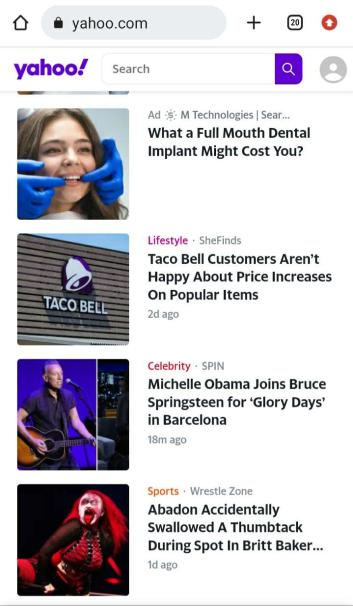
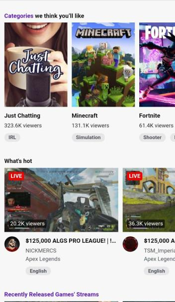
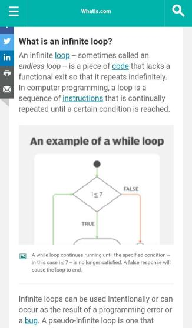

Alignment
www.yahoo.com
I really like how aligned the articles on this website become in mobile version. It makes it easy to navigate through them by simply scrolling up or down and don't have ads on the sides to cause a distraction of what you're trying to read.
Contrast
twitch.tv
When I think of contrast, I remember how it means for something to be different. It brought me to how when you're browsing twitch via mobile browser, not the app, some things that were included on the webpage version aren't included in the mobile version. Like the buttons for Games, IRL, and so on.
Repetition
www.techtarget.com
When it comes to repetition, which is another word for something that repeats, I immediately think of an endless loop, also known as an infinity loop, in programming. If you fail to put an end to your loop, it will just keep repeating that loop.